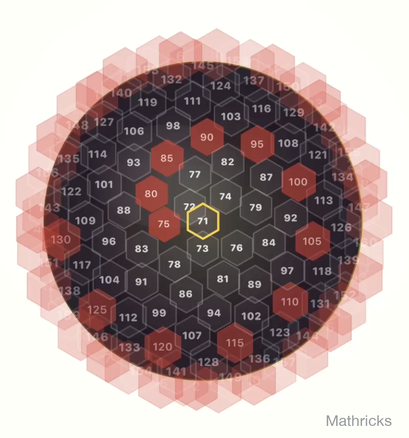

We're here to ensure your cryptographic hunt is as smooth as possible!
For any support issues, feedback and new feature requests, please don't hesitate to contact:
Get in Touch
Third-Party Puzzle Disclaimer
Bitcoin Puzzle Quest references the “~1000 BTC Bitcoin Challenge,” a cryptographic puzzle published January 15,
2015 by an anonymous contributor to demonstrate the vastness of Bitcoin's private-key space.
The original challenge funded a series of 256 addresses (now 160 active ranges) with a prize pool close to 1000
BTC.
This app provides only a local, offline tool to generate and test private keys to match against that publicly-available list. The developer:
Is not affiliated with the puzzle's creator
Does not control, sponsor, or administer any prizes or funds
Does not store or broadcast keys or transactions
Any Bitcoin discovered belongs solely to the private-key holder. Apple Inc. is not a sponsor or organizer of
this challenge.
Frequently Asked Questions (FAQs)
Q: What is Bitcoin Puzzle Quest?
A: Bitcoin Puzzle Quest (BPQ for short) is a puzzle-hunting app that lets you generate random (or
sequential) keys and test and match them against the famous Bitcoin
Puzzle address list - entirely
offline, on your own iOS device.
Q: How are the puzzle levels structured?
A: The challenge is divided into 160 levels (originally 256), with each level using a key range that
is twice as large as the previous one. For example:
Level 1: 2⁰ ≤ key < 2¹ (only 1 possible key)
Level 2: 2¹ ≤ key < 2²
Level 3: 2² ≤ key < 2³
...
Level 160: 2¹⁵⁹ ≤ key < 2¹⁶⁰
Each higher level doubles the size of the key space, making it exponentially harder to solve. To
reflect this, the puzzle creator(s) placed increasing amounts of Bitcoin in higher levels as added
incentive.
Q: How do I start playing Bitcoin Puzzle Quest?A: Open the app and start testing
keys by choosing your difficulty level and number of tries and hit the 'Go' button.
Quest Overview also gives you a 3D map of the whole puzzle to jump in from (see below).

Quest Overview 3D map
Q: What is the Quest Overview (3D view)?
A: The Quest Overview is a 3D map of all puzzle ranges, added in version 2.2. At a glance you can see
which puzzles are already solved, which have been tried, and which are still untouched, then tap a
range to jump straight into your next hunt.
Q: What is Power Surge?
A: Power Surge is our reward system that gives you temporary access to Continuous Mode, the
auto-tapping, sequential-scanning fast lane, without a purchase. You earn free Power Surge keys two
ways: by solving the Daily Chest mini-game and by inviting friends who go on to qualify.
When you earn or spend them you'll see a quick reward toast confirming it.
Q: How do "Invite Friends" and referral rewards work?
A: Every player that connects to Game Center gets a personal BPQ code. Share your code with a
friend, or redeem a friend's code from the menu. When an invited friend qualifies, you both earn
Power Surge keys as a thank-you. Invite codes are just short game codes—no names,
emails, or contacts are collected or uploaded.
Q: What does “difficulty level” mean?
A: The difficulty level defines the bit-size, i.e. the bit-length of the secret key. The 26-bit puzzle
contains 225 possible
keys (≈33 million); the 160-bit puzzle, the "beast", contains 2159 (≈7.3 x
1047). Bigger bits =
bigger needle in the haystack.
Q: Are there in-app purchases?
A: Yes, and they're all optional. The core game is free, and you can also earn Continuous Mode for free
via Power Surge. There are two kinds of purchase:
Million-Key Packs (consumable): 10M, 50M, 100M or
250M key packs. These top up your Continuous Mode key allowance.
Continuous Mode Unlock A one-time purchase for permanent, unlimited
Continuous and sequential scanning.
Prices are set on App Store and may vary by region. There are no subscriptions.
Q: Are there ads?A: No, there are no ads at the moment. Enjoy the game without any
distractions.
Q: Is this mining Bitcoin?
A: No. Mining secures the Bitcoin network by hashing block headers; our app merely guesses private
keys
inside predefined ranges to see if any unlock the funded puzzle addresses. Think “lottery
scratch-off,”
not “industrial crypto mine.”
Q: How likely am I to win?
A: The remaining puzzles are still astronomically hard. Low-bit ranges (e.g. 25 bits) can be
replayed for experimenting and learning; high-bit ranges (100+ bits) are purely for the
thrill. We highlight the lowest unsolved in the difficulty level picker — your “best bad odds,” so to
speak. To estimate your personal chance, we've added the ratio of the number of keys tried by the
total number of keys in that range for each puzzle.
Q: How do I claim BTC if I find a winning key?
A: Congratulations! If you have successfully generated a private key that matches one of the publicly known and still-funded puzzle addresses,
you have solved a legendary cryptographic challenge!
Managing private keys and moving cryptocurrency can be risky, so Bitcoin Puzzle Quest does not provide
financial, legal, or operational instructions.
We do offer a short, informational overview to explain the general concepts involved:
Q: How have some high-bit difficulty levels already been solved?
A: The puzzle creator(s) left a "small" clue by making an outgoing transaction from those addresses,
which reveals the public key. Levels 75,80,85,90,95,100,105,110,115,120,125 and 130 have been solved this way.
That hint cuts the number of possible keys to try in half. Using this extra information, puzzle
hunters apply specialized search techniques to recover the private keys more quickly for the remaining levels 135,140,145,150,155 and 160-bit.
The puzzle creator(s) have confirmed that no other clues or backdoors exist.
Q: Why can't BPQ keep scanning in the background?
A: Your device suspends nearly all CPU-intensive work when an app is backgrounded or the screen locks.
Continuous Mode runs only while the app is in the foreground and the device is awake (e.g., charging
with
Auto-Lock disabled).
Q: What is Continuous Mode and do I need it?
A: Continuous Mode automates the “Go!” button and adds sequential scanning. You don't need it, manual
tapping and batch modes are always free, but it's perfect if you'd rather watch the numbers roll than
the DIY “robot finger.” You can get it three ways: earn temporary access for free through
Power Surge (Daily Chest + invites), top up with Million-Key Packs,
or buy the Continuous Mode Unlock for permanent, unlimited use.
Features comparison:
Scenario
Free Mode
Continuous Mode
Single/batch taps
✔️
✔️
Sequential scanning
—
✔️
Auto‑tapping while you sip coffee
—
✔️
Earn it free via Power Surge
✔️
✔️
Q: Is Continuous Mode a subscription?
A: No. Nothing in Bitcoin Puzzle Quest is a subscription. The Continuous Mode Unlock is a one-time
purchase that permanently unlocks continuous and sequential scanning on your Apple ID for this app, and
the Million-Key Packs are one-off consumable top-ups. Both are subject to Apple's usual App Store
rules.
Q: I tried to upgrade to Continuous Mode but it does not work. What can I do?
A: Continuous Mode is sold through Apple's in-app purchase system. If the upgrade button does not
work, or the purchase fails, please try the following:
Make sure you are signed in with a valid Apple ID and that your payment method is up to date.
Check that in-app purchases are allowed in Settings on your device.
Ensure you have a stable internet connection and try again after a few minutes.
If the App Store shows a specific error message, follow the link in that message or visit Apple
Support and check your purchase history.
If you still cannot complete the purchase, please contact us with screenshots of any error messages so
we can help you investigate.
Q: Is my data private?
A: Yes. Found keys and puzzle/key-attempt counters are stored locally in UserDefaults.
Nothing leaves your device. If you join Game Center to compete against worldwide hunters, the attempt
counts will be shared to rank you on the global leaderboards and unlock achievements. Your BPQ invite
code is a short game code only and no personal data is collected.
Q: Does BPQ use proprietary cryptography?
A: No. Only open, standard algorithms such as secp256k1 (ECDSA), SHA-256, and RIPEMD-160, as specified
by IETF/ISO are utilized to compute Bitcoin addresses from private keys.
Q: Why is my device heating up?
A: Generating tons of keys per minute taxes the CPU. For marathon runs, keep your device on a charger,
use Low Power Mode (it only affects screen refresh), and give it breaks if it gets too warm.
Q: Does BPQ have a mini-game?
A: Absolutely! Double-tap the treasure-chest icon on the main screen to open the Daily Chest,
a quick 3×3 sliding puzzle. It started life as a cheeky Easter egg, but solving it now rewards you with
Power Surge keys, a free trial of Continuous Mode, once per day. Because every epic quest
deserves a hidden side quest and a daily bonus.
Q: Can I run Bitcoin Puzzle Quest on Windows, Linux, or Android?
A: Today Bitcoin Puzzle Quest is built and supported for Apple platforms only, with the main focus on
iOS and iPadOS. It also runs on macOS (Apple silicon, via the universal build) and on Apple Vision
(visionOS). We do not currently offer a Windows, Linux, or Android version, and we cannot promise if or
when versions for other platforms will be available.
Q: Does BPQ use my GPU or support powerful desktop graphics cards?
A: No. BPQ currently runs on the CPU of your iOS or Apple silicon device and is designed as an
offline, on-device puzzle experience.
There is no support for external GPUs, desktop GPUs, or dedicated mining hardware.
Q: Will there be Android / macOS / Apple Watch versions?
A: macOS on Apple silicon and Apple Vision (visionOS) already work via the universal build. Android is
under exploration (no ETA). Apple Watch support is on our roadmap as a remote dashboard.
Q: Will you add a cloud or “rented GPU” option for faster scanning?
A: No, not at this time. Bitcoin Puzzle Quest is designed as a local, offline game that runs on your
own Apple device. We do not provide remote GPU servers or cloud computing resources, and we cannot
offer a timeline or promise for such a feature in the future.
Q: What do I do if the game crashes?A: Restart the game and ensure your
device's OS is up to date. Your discovered keys are saved on your device.
Q: Can I play on multiple devices?A: Yes, you can play on as many devices as
you wish. However, any found keys are saved per device.
Q: I found a bug or have a feature idea, how do I contact you?
A: Email info @ mathricks.com with your app version, iOS version, device model, and reproduction
steps.
Screenshots help!
Q: Is this legal?
A: Solving public Bitcoin puzzles is legal in most jurisdictions. Be sure to check local laws on
digital assets and taxes.
Q: Where can I learn more about this Bitcoin Puzzle?
A: Visit the community forum topic at bitcointalk.org and the
helpful websites like privatekeys.pw or
btcpuzzle.info for historical data,
solved levels, and tips. Reddit's r/Bitcoin and r/cryptocurrency also discuss current puzzles.
Game not loading or stuck on the first screen: Force-quit Bitcoin Puzzle Quest,
reopen it, and make sure you have enough free storage and a recent iOS version supported by the App
Store listing.
Game crashes: Restart your device, open BPQ again, and try a smaller difficulty or
fewer tries per batch.
Continuous Mode stops by itself: Continuous Mode only runs while BPQ is open in the
foreground and the screen is on. If you want to keep it running for longer sessions, check that
Auto-Lock is disabled or set to a long interval and keep the device awake, for example by leaving it
on a charger. Be aware that long continuous runs can warm up your device more quickly, so take breaks
if it feels too hot.
Device gets hot or battery drains quickly: This is expected when scanning large
numbers of keys. Run on a charger if desired, lower the difficulty level or tries per batch, and give
the device breaks if it becomes very warm.
Cannot purchase or upgrade to Continuous Mode: Check that you are signed in with a
valid Apple ID, that in-app purchases are allowed in Settings, and that your payment method is valid.
If the App Store shows an error, follow the link in that dialog or contact Apple Support. If you are
still stuck, contact us with screenshots.